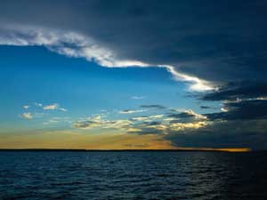
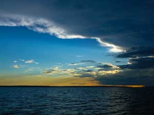
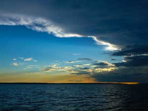

I have several times alluded to the surface of the ground being incrusted with salt. This phenomenon is quite different from that of the salinas, and more extraordinary.
 

Arrival: 1833 July 23rd
"I was assured by an English merchant, that a man who had murdered another, when arrested and questioned concerning his motive, answered, "He spoke disrespectfully of General Rosas, so I killed him." At the end of a week the murderer was at liberty."
The Beagle sailed from Maldonado, and she arrived off the mouth of the Rio Negro. This is the principal river on the whole line of coast between the Strait of Magellan and the Plata.
I have several times alluded to the surface of the ground being incrusted with salt. This phenomenon is quite different from that of the salinas, and more extraordinary.
